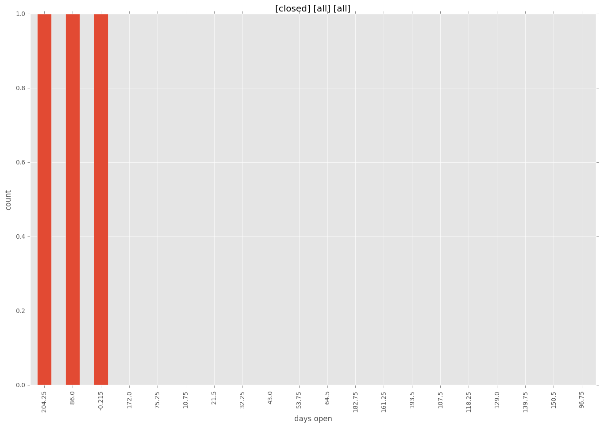
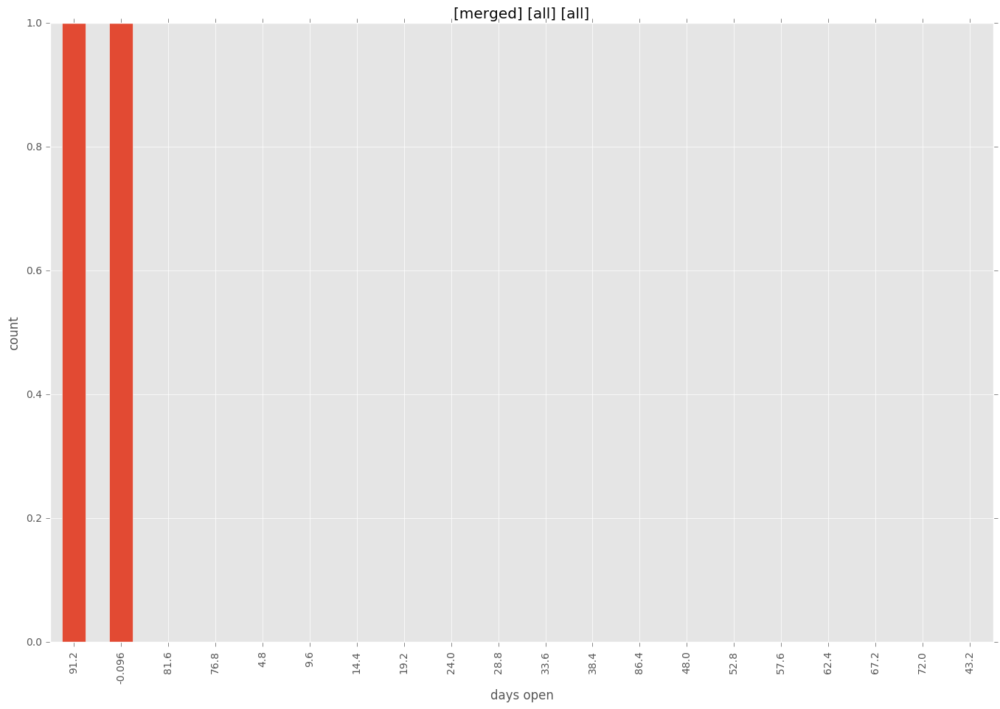
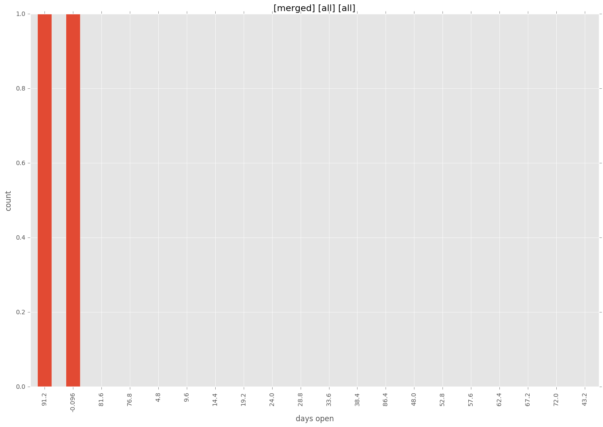

total issue counts
issue: 1
pullrequest: 3
docs pull request: 1
new plugin: 2
bug report: 1
issue history

days open by issue type
all
count: 5
std: 88.7795021387
min: 0
max: 215
median: 96.0
mean: 81.4
pullrequest
count: 0
std: nan
min: nan
max: nan
median: nan
mean: nan
docs pull request
count: 2
std: 0.0
min: 0
max: 0
median: 0.0
mean: 0.0
issue
count: 0
std: nan
min: nan
max: nan
median: nan
mean: nan
new plugin
count: 3
std: 68.7046820336
min: 96
max: 215
median: 96.0
mean: 135.666666667
bug report
count: 0
std: nan
min: nan
max: nan
median: nan
mean: nan
closures grouped by total days open



 
